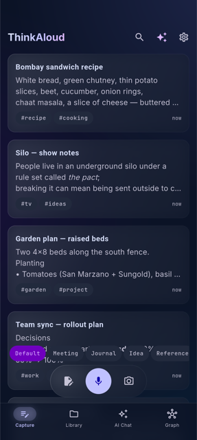
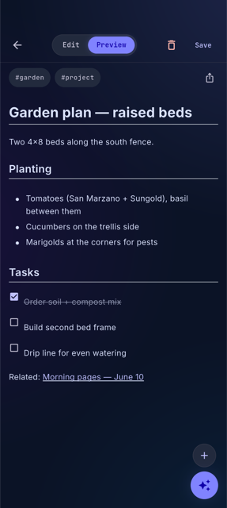
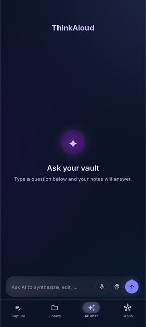
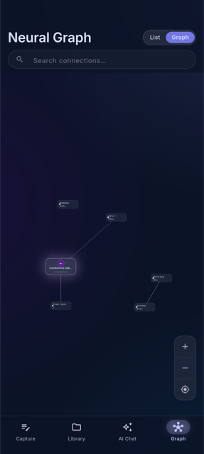
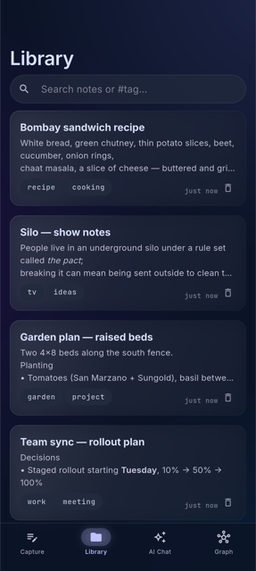
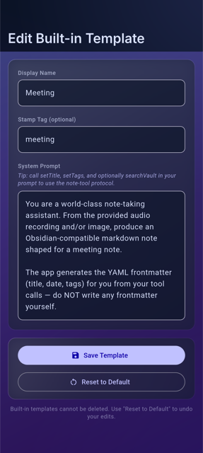

Features
Speak it, snap it, or type it
The capture screen is the home screen — pick a style chip and go. Templates shape the result: a Journal entry comes out as flowing reflection, a Meeting as decisions and action items, an Idea as a crisp summary with next steps. You can edit the built-in templates or write your own.
- Voice — talk naturally; filler words disappear, names and numbers don't
- Photo — whiteboards, documents, and slides become written notes
- Text — paste or type, same structuring pipeline
- Share sheet (Android) — send content from other apps

Lecture-length recordings
Record a class, a meeting, or a long walk-and-talk. ThinkAloud listens in overlapping windows, builds a running understanding of the whole recording, then writes one note in your selected style that covers all of it — with a timestamped transcript below and the original audio embedded, playable inside the note.
Processing runs in the background with a progress notification; the raw recording is saved into the vault before processing starts, so even a crash can't lose your audio.

Question your own notes
AI Chat answers from your vault, not from the internet. Ask by typing or by voice; ask follow-ups; switch on Think mode when a question needs a deeper search. Answers are grounded in retrieved excerpts of your notes, and each one shows its Sources — tap a chip to open the note behind the answer.
There's a per-note chat too: open any note and ask about it, or tell it "change Friday to Monday" and watch the edit apply surgically.

A graph that draws itself
Every capture gets a ## Related section linking the existing
notes it overlaps — exact-title [[wikilinks]] the app verifies
against your vault, never links the model made up. The graph view shows the
result: clusters for your projects, your journal, your recipes, connected
where your thinking actually connects.

Browse, search, filter
Full-text search across every note, instant tag filtering
(#work, #recipe), and a feed of recent notes on the
home screen. Notes open into a reader with tappable checklists, inline
images and audio, and rendered wikilinks — or flip to the editor for raw
Markdown with a formatting toolbar.
- Vault health — find orphaned attachments, broken links, and untagged notes, each with a one-tap fix
- Share any note as Markdown or a rendered PDF — emoji included

Your model, your rules
Settings exposes the machinery instead of hiding it. A live model picker lists the on-device models your phone can actually run — including NPU-optimized builds matched to your chip — with resumable downloads. Tune the context window, sampling temperature, retrieval depth, emoji styling, note language, and whether captures get the second polish pass.
Notes live in plain Markdown wherever you point the app: its own folder, any folder you pick, or an existing Obsidian vault. Optional sync goes to your own Google Drive or iCloud — the developer runs no servers.

Curious how it all fits together? Read the explainer →